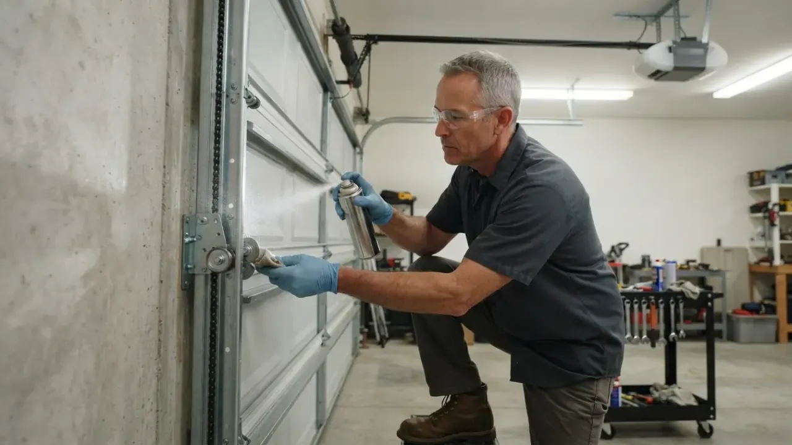

Your local New Tampa garage door repair team
Garage Door Repair in New Tampa Done Right the First Time
A garage door that will not close is a security problem the same day it happens, and in New Tampa we treat it that way. Our techs work 33613 and 33647 every week, fixing snapped springs, frayed cables, worn rollers and openers that run without lifting the door. We diagnose on site, quote a flat price before touching a bolt, and carry LiftMaster, Chamberlain, Genie and Craftsman parts on the truck. The newer subdivisions here run on heavy double doors and builder-grade hardware, so we size replacement springs to the actual door weight instead of guessing from a chart.
24/7 dispatchNew Tampa ZIP codesResidential & commercial
Local system knowledge
Garage Door Repair in New Tampa, Backed by Local Experience
New Tampa is newer than most of Tampa, and that shapes the repair work: large double garages, heavy insulated doors and builder-grade springs, rollers and openers that were fitted to a budget rather than to a long life. We work Tampa Palms and West Meadows almost every week, and the pattern is consistent: a door that cycles several times a day on light hardware wears its springs and rollers out sooner than the homeowner expects. We size replacement springs to the actual door weight and fit parts that suit the door, not the lightest hardware on the shelf.
Our techs carry torsion spring winding bars, cable drums, winding cones and a sensor alignment tool on every truck, and we stock LiftMaster, Chamberlain, Genie, Craftsman and Linear parts because those are the openers fitted across the newer subdivisions here. If your door is stuck halfway open or the opener runs but will not lift, we diagnose it on site and give you a flat price before we touch a bolt.
We are a garage door contractor, and every spring replacement meets UL 325 safety standards. Licence number available on request. That is not a slogan: a heavy double door that has lost a spring can come down fast, and the spring has to be sized to the actual door weight and wound to the right torque.
Explore New Tampa services
garage door repairs Tampa FlThe garages in New Tampa get used hard, every day, and the doors wear in step with that use. School runs, grocery trips, work commutes and visitors all add cycles, and hot humid summers cook lubricant off the tracks. A tune-up that covers lubrication, balance and hardware checks is what keeps a busy door running quiet.
Services available in New Tampa
Garage Door Repair Services New Tampa Homeowners Call For
Every service below is delivered in New Tampa by our own techs, not subcontracted out. If you are searching for garage door repair near New Tampa late at night because the door will not close, we answer and we roll, and most spring, cable, roller and opener jobs finish in a single visit.
01
Garage Door Repair
A door that misbehaves in New Tampa is rarely a mystery: it is a spring, a cable, a roller or an opener fault, and we find which one on the first visit. Most repairs finish the same day because the truck carries the parts these doors actually use.
02Garage Door Spring Repair
A broken torsion spring is the call we get most in New Tampa. You hear a bang like a firecracker and the door gets too heavy to lift. We replace both springs as a matched pair, wind them to the right torque with winding bars, and test the door balance before we leave. Heavy double doors in the newer subdivisions put more load on springs, so we size replacements to the actual door weight.
03Garage Door Opener Repair
When the opener runs but the door does not move, the fault is usually a stripped gear, a worn drive belt or a dead logic board. We test the unit under load, confirm the fault before replacing anything, and repair or replace only the part that failed. The newer subdivisions here run mostly LiftMaster and Chamberlain openers, and we carry their common gear sets and boards on the truck.
04Garage Door Cable Repair
A snapped cable throws the door off balance and can drop it crooked onto the track, so it is not a job to put off. We replace both cables as a pair, reset the cable drums, and re-level the door before we call it done.
05Garage Door Panel Repair
A bent panel can bind the door in its track even when the damage looks small. We check the panel, the hinges and the track together, then either straighten the panel or fit a matching replacement so the door runs smooth and looks right. A mismatched panel can get flagged by the HOA here, so we match the panel profile and factory colour before ordering.
06Garage Door Roller Repair
A door that shudders or grinds on the way up usually has rollers that are worn flat or seized in their stems. We fit a full set of new rollers, clean the tracks instead of greasing them, and lubricate the hinges and bearings so the door runs quiet. Builder-grade rollers wear out early under daily cycles here, so we fit a full set rather than replacing one at a time.
More than a service list
How We Run Garage Door Repair in New Tampa
Most garages here are attached, insulated and packed with stuff, so the first thing we do is clear a safe work zone and lock the door in place. We check the torsion springs, cables and cable drums before touching the opener, and the patterns below are the ones we see most in the newer subdivisions.
Heavy double doors strain springs and openers
Bigger insulated double doors weigh more, so springs and openers work harder, and a door that cycles several times a day wears out faster than a single-car door used twice a day. How we help: We size replacement springs to the actual door weight instead of guessing, and we set opener force limits to the door, not to the factory default, which is what keeps a heavy door running smoothly.
Large subdivisions hide the right entrance
The subdivisions here are large, with similar street names and more than one entrance, so a dispatcher working from a house number alone can send a truck to the wrong gate. How we help: Give us a street name and a nearby landmark when you call, and we will find the right entrance on the first trip instead of circling the neighbourhood.
Smart openers and keypads lose their settings after a power cut
A power cut can wipe an opener's limits or a keypad's code, and the door then reverses for no reason or ignores the keypad entirely. It looks like a broken opener, but it is usually a settings problem. How we help: We reprogram the opener and the keypad on site, check the safety sensors, and test the door through a full open-and-close cycle before we leave.
Early warning signs
Signs You Need Garage Door Repair in New Tampa
If your door is doing any of these, it is worth a call before the next failure. A symptom that looks small is often the early sign of a spring, cable or roller problem.
Remote works sometimes, or not at all
A remote that works from the driveway one day and not the next is usually a weak battery, a failing receiver or a sensor problem, not a dead opener. Try a fresh battery first, and if the door still ignores the remote, we test the receiver and the safety sensors on site.
Door slams down instead of closing smoothly
A door that drops fast on the way down has lost spring tension or cable support, and it is dangerous to stand under. Do not try to catch it or force it back up. Secure the area and call us, because a slamming door is a spring or cable failure that needs fixing before the door is used again.
Daylight or a gap under the closed door
A gap under a closed door, or daylight showing at the sides, usually means a worn bottom seal, a track out of alignment or a door that is no longer level. It lets in rain, dust and pests, and it usually points to a balance or track problem rather than just a seal.
Loud bang from the garage
A loud bang usually means a torsion spring has snapped. The door will feel far too heavy to lift by hand, and forcing it can damage the opener or drop the door crooked. Secure the door, do not try to lift it, and call for a spring replacement.
Clear starting points
What Garage Door Repair Costs in New Tampa
Typical 2026 pricing in New Tampa runs $180 to $450 for most repairs, with a torsion spring replacement on a standard two-car door landing in the $250 to $400 range including parts and labor. A new opener installed runs $350 to $700 depending on the unit and whether we are replacing the rail. Cable replacement is usually $200 to $350 for both sides. Panel replacement depends on the door brand and whether the panel has to be ordered, so that one gets quoted after we see it. Emergency and after-hours calls carry a higher rate, quoted before we roll. We give you a flat price before we start, and the price does not change because the job took longer than expected.
Phase 01
Door weight is the main driver here: a light single door and a heavy double door take different springs, different labour and different time. We weigh the door on the visit and size the springs to it, so the price you are quoted is the price for your door.
Phase 02
A single-car door uses lighter, cheaper springs than an oversized double door, and a heavy insulated door costs more to spring properly than a light steel one. We size springs to the actual door weight, not to a generic chart, and we tell you the number before we start.
Phase 03
A single-car door uses lighter, cheaper springs than an oversized double door, and a heavy insulated door costs more to spring properly than a light steel one. We size springs to the actual door weight, not to a generic chart, and we tell you the number before we start.
We know the route
Getting Around New Tampa: Landmarks We Use
These are the reference points we actually use when we are routing between calls in New Tampa. They are not a tour, they are how the dispatcher works out which approach to take.
01
We pass 01 on a lot of New Tampa calls, so it works well as a meeting point in your directions. It tells us which side of the neighbourhood you are on and which route in avoids the busy streets.
02
02 is the reference point we use most on this side of New Tampa. When you call, telling us you are near 02 helps the dispatcher send the truck down the right approach instead of circling the block.
03
03 anchors the New Tampa side of our route. If you are giving directions, name 03 first and then your street, that is usually enough for us to find the right entrance on the first trip.
04
04 anchors the New Tampa side of our route. If you are giving directions, name 04 first and then your street, that is usually enough for us to find the right entrance on the first trip.
New Tampa service coverage
Is your ZIP on the route?
Our New Tampa coverage centres on 33613 and 33647. Those are the ZIP codes we serve most often, and nearby areas may also qualify, so call if yours is not listed.
Popular neighborhoods: Tampa Palms · West Meadows · Cross Creek · Heritage Isles
Check my address →
1234
Primary New Tampa response zoneSame-day response depends on current call volume, technician availability, and required equipment.
Reviews from New Tampa customers
What New Tampa Customers Say
★★★★★
“Our torsion spring snapped on a Saturday morning and we could not get the car out. They answered the phone, quoted a flat price and had a tech at our house in Tampa Palms within two hours. He replaced both springs, not just the broken one, and showed me the old ones. Door runs quieter than it has in years. Fair price, no upsell.”
★★★★★
“The opener in our West Meadows house was running but not lifting the door. Turned out to be stripped gears plus a tired spring. They had the parts on the truck and fixed it the same visit. The tech explained what failed and why, and he did not try to sell me a whole new opener. That is rare.”
★★★★★
“We had a dented panel in Cross Creek and the HOA was on us about the color. They matched the panel to our existing door perfectly and handled the install in one afternoon. Only reason it is not five stars is the panel had to be ordered, so it took a few days. Worth the wait for the color match.”
Outside New Tampa?
New Tampa and the Surrounding Service Area
Downtown Tampa
About 20 miles southwest of New Tampa via I-275. We cover it on the same routes, so a call from there can usually be paired with a New Tampa job on the same day.Channelside
Roughly 22 miles south of New Tampa near the Port Tampa Bay district. We cover it on the same routes, so a call from there can usually be paired with a New Tampa job on the same day.
Hyde Park
About 20 miles southwest. It is part of our regular coverage, and we run calls there on the same schedule as New Tampa.New Tampa garage door repair local notes
Local Notes for New Tampa
New Tampa is a newer master-planned community in Hillsborough County, in north Tampa, where most homes have larger double garages built for two cars.
HOA rules shape exterior work here, so check before changing the door's outward appearance. We match the panel profile and factory colour before ordering, and we pull the brand and colour code off your existing door, so a repair blends in and does not come back as a second job.
Heavy double doors need springs sized to their actual weight and opener force limits set to the door, not to the factory default. That combination is what keeps a heavy door running smoothly for years, and it is what we check on every spring and opener call in these subdivisions.
Navigation is part of the job in a large subdivision. Give the dispatcher a street name and a nearby landmark, and mention the gate or entrance if there is one, and the truck will find the right approach on the first trip instead of circling the neighbourhood.
New Tampa garage door repair FAQ
Garage Door Repair in New Tampa: Common Questions
A real dispatcher is available if your question is not answered here.
Call +1 (773) 915-6384How much does garage door repair cost in New Tampa?
Most repairs in New Tampa run $180 to $450 in 2026, with a torsion spring replacement on a two-car door landing around $250 to $400 including parts and labor. Cable replacement is usually $200 to $350 for both sides, and a new opener installed runs $350 to $700. Emergency and after-hours calls carry a higher rate, quoted before we roll. You get a flat price before we start.
Who is the best garage door repair company in New Tampa?
The best garage door repair New Tampa company is the one that answers the phone, carries the parts on the truck and quotes a flat price before starting. We are a garage door contractor (licence number available on request) working the 33647 and 33613 ZIP codes every week, and we stock LiftMaster, Chamberlain, Genie and Craftsman parts. Ask any company those three questions before you book.
Is there 24/7 garage door repair in New Tampa?
Yes. We run 24/7 garage door repair New Tampa dispatch for doors that will not close, are hanging off the track or have a snapped spring. You reach a real person, not a voicemail, and we quote the after-hours rate before we roll. For non-emergencies, same-day slots are usually open if you call before noon.
How do I choose a garage door repair service in New Tampa?
Check three things: a Florida license, a flat price quoted before work starts, and a warranty that covers both parts and labor. Then ask whether they carry the parts on the truck, because a company that has to order every spring turns a two-hour repair into a two-week wait. A local crew that runs regular routes through New Tampa will get to you faster.
Do you offer emergency garage door repair in New Tampa?
Yes. Emergency garage door repair New Tampa calls get priority dispatch, and we can usually have a tech at your door the same day for true emergencies like a snapped cable or a door off the track. We secure the door first so it cannot fall, then repair it. Call us any time, day or night.
New Tampa dispatch is ready
Need garage door repair Tampa? Call now
A door that will not close is a security risk, and a snapped spring only gets worse. We answer 24/7, quote before we start, and carry the parts to finish most jobs the same day. Call and we will get a truck moving.

Talk with the local team
Request New Tampa service
Call, text or email and a real person answers. Tell us what the door is doing, and we will give you a price range on the spot and the soonest arrival window. Most calls placed before mid-afternoon get a same-day visit.